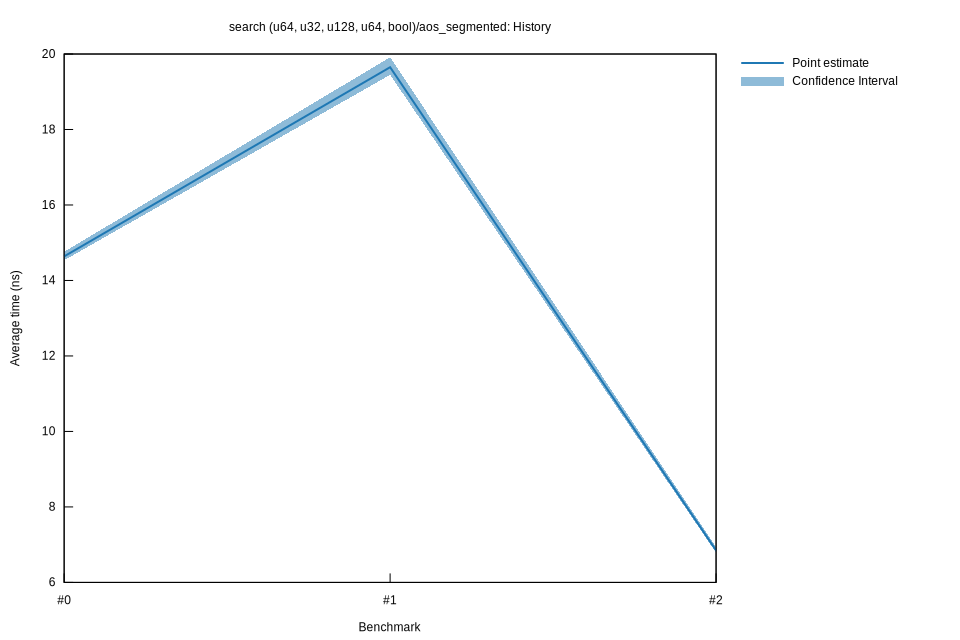

# 22023-02-24T22:37:30+01:00
|
Lower Bound |
Estimate |
Upper Bound |
| Value: |
6.79ns |
6.85ns |
6.93ns |
| Throughput: |
147.35Melem/s |
146.06Melem/s |
144.23Melem/s |
| Change in Value: |
-67.694% |
-66.378% |
-65.161% |
| Change in Throughput: |
+209.54% |
+197.42% |
+187.03% |
No change in performance detected.
# 12023-02-24T16:23:01+01:00
|
Lower Bound |
Estimate |
Upper Bound |
| Value: |
19.45ns |
19.65ns |
19.91ns |
| Throughput: |
51.42Melem/s |
50.89Melem/s |
50.22Melem/s |
| Change in Value: |
+28.660% |
+35.349% |
+42.169% |
| Change in Throughput: |
-22.276% |
-26.117% |
-29.661% |
No change in performance detected.
# 02023-02-24T15:52:03+01:00
|
Lower Bound |
Estimate |
Upper Bound |
| Value: |
14.54ns |
14.64ns |
14.76ns |
| Throughput: |
68.80Melem/s |
68.31Melem/s |
67.75Melem/s |